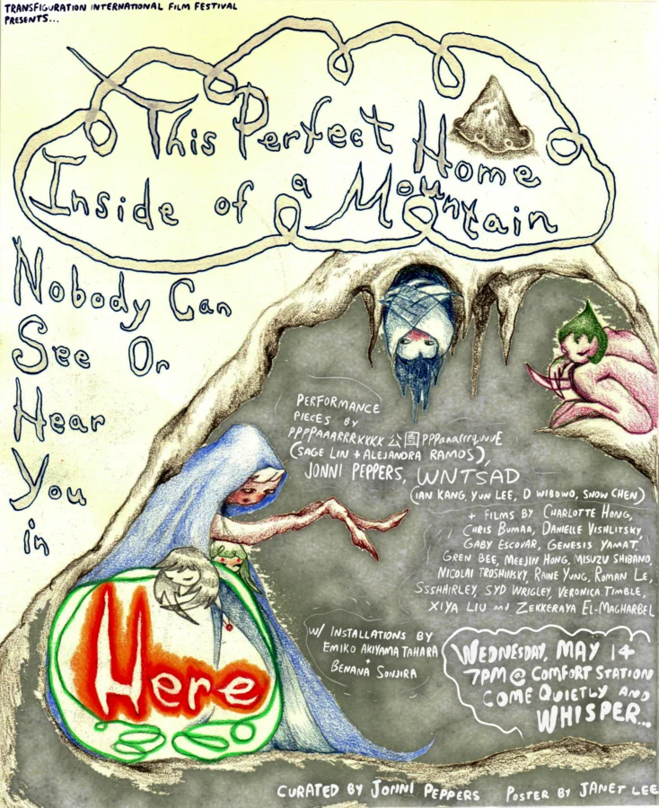

This Perfect Home Inside of a Mountain Nobody Can See Or Hear You in Here
Performance 1: Ppppaaarrrkkkk 公 園 pppaaarrrquuuE (Sage Lin and Alejandra Ramos)
Screening part 1:
COBWEBS (Zekkeraya El-Magharbel)
Smrt Piece (Charlotte Hong)
Family (Genesis Yamat)
Sit Still (Gren Bee)
My Very Worst Nightmare (Syd Wrigley)
The Sun (Veronica Timble)